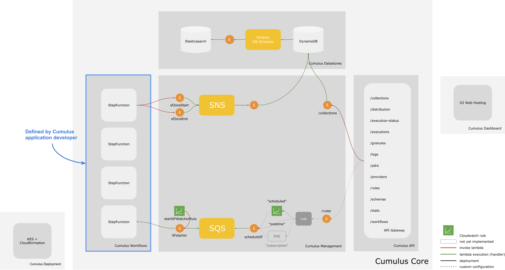

Cumulus Architecture
Below, find a diagram with the components that comprise an instance of Cumulus.

While the internals are complex, the boxes represent components which are easy to understand:
- Every Cumulus application requires it's own Cumulus deployment (lower left corner)
- Every Cumulus deployment comes with:
- DynamoDB and ElasticSearch datastores
- an API Gateway for managing collections, providers, granules and other Cumulus resources, and,
- internal lambda functions and queues for managing Cumulus workflows
- Every Cumulus application should define a set of workflows, which are deployed as AWS Step Functions along with all other AWS Cumulus resources.
Developing a Cumulus Application
Cumulus is a collection of resources for Cumulus developers. These resources are:
@cumulus/deployment: A node module for creating a Cumulus deployment. A Cumulus deployment is comprised of 4 AWS Cloudformation stacks. Each Cumulus application will have it's own cloudformation stacks.@cumulus/api: A node module for deploying the Cumulus API and other AWS resources required to run Cumulus workflows.- Node modules for tasks to be run as part of Cumulus Workflows, for example
@cumulus/parse-pdr cumulus-dashboard: Code to generate and deploy the dashboard for the Cumulus API.
Cloudformation Stacks
- IAM: Sets up IAM roles for AWS services deployed by the Cumulus stack to be assigned the required policies.
- Cumulus:
- Lambda functions and ECS activities (required for workflows)
- Step functions (aka workflows)
- Elasticsearch for search on workflow executions and logs
- DynamoDB for storing (earthdata) users, rules, collections and providers.
- Cumulus API Default and Cumulus API V1: Nested stacks deploying API Gateway resources
Cumulus Dashboard
Uses S3 static website hosting built using the cumulus-dashboard repository.